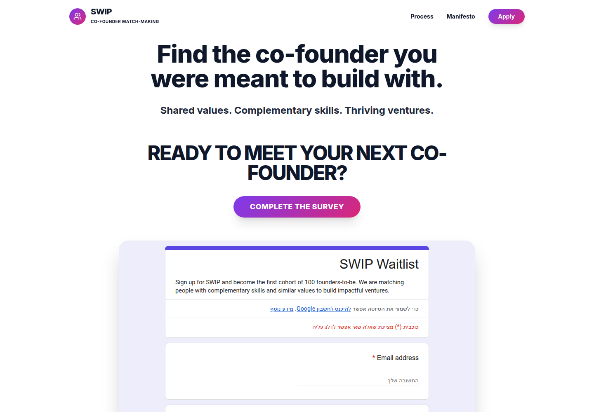
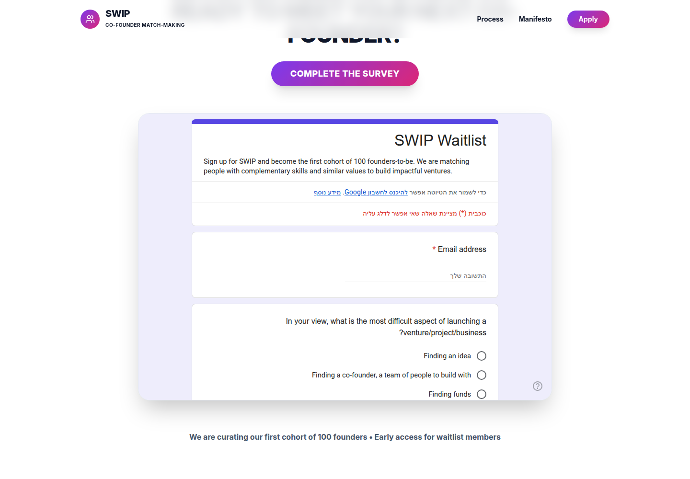
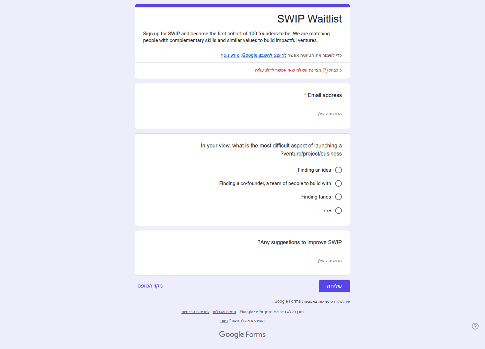

Profile
- Company
- SWIP
- Url
- https://swipventures.com/
- Source Category
- Direct competitors
- Research Status
- Deep Cited Research / Draft Complete
- Current Status
- live but pre-launch waitlist product - re-verified 2026-07-19 by direct fetch (HTTP 200). Site is explicitly pre-launch: 'We are curating our first cohort of 100 founders - Early access for waitlist members.' No functioning matching product yet, only a survey/waitlist signup and an 'AI Match Simulator' demo widget. Not dead or hijacked, but there is no live product to evaluate beyond a landing page and a Gemini-powered demo simulator.
- Founded Launch Year
- not found / no public source - copyright footer reads '© 2026 SWIP. Powered by SWIP Ventures', consistent with a 2026 launch; no earlier founding date found. Note: search results for 'SWIP' surfaced an unrelated fintech company (also called 'SWiP', founded by Anatoly Raikhert, reporting $2.7M revenue) - that is a different, unrelated business and was excluded from this profile.
- Company Age
- <1 year (estimated)
- Hq Country
- not found / no public source
- Operating Area
- Described as global ('Global pool - Meet founders from around the world, across time zones and industries')
- Target Users
- First-time and repeat founders seeking a cofounder, across roles: product/design, growth/GTM, builders/engineers, and impact-venture founders
- Product Category
- swipe/card matchmaking; cofounder matching; AI-generated venture roadmap tool. No founder-investor capital feature, no data room, no confirmed NDA/e-sign.
Product Flows
- Swipe Card Interface
- yes (as described) - 'Skip endless networking. Swipe, match and move to real conversations quickly' is explicit site copy, though the live site currently only exposes a waitlist survey and a simulator, not an actual swipe UI to test
- Mutual Match
- not found / no public source - copy references 'swipe, match' generically but does not explicitly describe a mutual double opt-in mechanic the way competitors do
- Ai Matching Scoring
- yes (limited/demo-stage) - site features an 'AI Match Simulator' explicitly 'Powered by Gemini' that generates a sample co-founder match and an AI-generated 'Launch Roadmap' PDF; this is a live, working AI demo feature, though it is unclear if it reflects the real matching algorithm or is illustrative marketing
- Ai Deck Scoring
- not found / no public source
- Founder To Founder Flow
- Complete an intake survey (values, skills, ambition) -> join the waitlist/cohort ('curating our first cohort of 100 founders') -> once admitted, matching is based on 'shared values, complementary skills, and mutual ambition' across three stated steps: (1) Alignment - matched on shared values/complementary skills, (2) Commitment - connect with founders who take partnership seriously, (3) Action - paired founders enter a '48-Hour Challenge' to build a functional prototype together over one weekend and get community feedback. A separate 'AI Match Simulator' widget lets prospective users preview a sample match and an AI-generated venture roadmap (Gemini-powered, downloadable PDF) before committing.
- Founder To Investor Flow
- Not applicable - SWIP is exclusively a cofounder-matching product with no investor-facing side found.
- Project Profiles
- not found / no public source - no structured per-project profile system found; matching is framed around personal 'Founder ID' profiles rather than project listings
- Messaging Collaboration
- not found / no public source beyond the community-feedback aspect of the 48-Hour Challenge; no dedicated in-app chat/collaboration tooling described
- Mobile App
- not found / no public source - no app store listing found; product is currently web-only (survey/waitlist)
- Web App
- yes - live web-based survey/waitlist flow and AI Match Simulator demo at swipventures.com
Security & Documents
- Nda Gated Unlock
- not found / no public source (original automated pass also marked 'not found'; confirmed no NDA feature exists)
- Data Room
- not found / no public source
- E Signature
- not found / no public source - no e-signature feature found (contradicts original automated pass which marked 'yes' with no supporting basis)
- Meeting Prep Ai Briefing
- not found / no public source - closest analog is the AI-generated 'Launch Roadmap' PDF from the Match Simulator, which is a planning document, not a meeting-prep briefing
Pricing, Funding & Traction
- Pricing Model
- not found / no public source - no pricing disclosed; product is in free waitlist/early-access phase
- Business Model
- not found / no public source
- Total Funding
- not found / no public source - no Crunchbase, PitchBook, or press record found; appears to be a very early, likely self-funded or pre-seed project
- Funding Rounds
- not found / no public source
- Investors
- not found / no public source
- Funding Source Type
- Unknown - no funding evidence found
- Last Funding Date
- not found / no public source
- Users Traction
- Site states it is 'curating our first cohort of 100 founders' via waitlist - this is a target/goal figure, not confirmed actual signups or matches made
- Deals Funding Facilitated
- not applicable - no capital-facilitation feature
- Partnerships
- not found / no public source
- Media Coverage
- not found / no public source - no press coverage found for swipventures.com specifically
- Product Update Activity
- not found / no public source - single landing page with waitlist form and one interactive demo widget; no changelog or blog found
- Acquisition Rebrand History
- not found / no public source
Scores
- Product Overlap Score
- 3
- Feature Maturity Score
- 1
- Market Traction Score
- 1
- Funding Strength Score
- 1
- Ai Depth Score
- 2
- Nda Security Strength Score
- 1
- Network Moat Score
- 1
- Direct Threat Score
- 1.4
- Source Confidence
- Low
Evidence Notes
- Primary Sources
- https://swipventures.com/
- Secondary Sources
- No independent secondary sources found. Caution: web searches for 'SWIP' also return an unrelated company (a fintech card business, also stylized 'SWiP', founded by Anatoly Raikhert, ~$2.7M revenue per Latka) - confirmed this is a different business, not swipventures.com, and excluded it from this profile.
- Unsupported Claims
- The '100 founders' figure is a stated recruitment target/cohort size, not verified actual traction - flagged rather than reported as a users_traction fact.
- Contradictions
- Original automated pass marked e_signature 'yes' with no supporting basis found; downgraded to 'not found'. Original pass's 'users_traction: 100 founders' is more accurately described as a target cohort size than confirmed traction; clarified here.
- Last Checked
- 2026-07-19
- Notes
- Along with SwipeDeck, this is one of the two companies in the batch where very little could be verified beyond the landing page itself - pre-launch waitlist product, no funding data, no traction data beyond a stated 100-founder cohort target, no press, no app. Its most distinctive real feature is a working Gemini-powered 'AI Match Simulator' demo, which is a genuine (if early) AI capability worth noting even though the core matching product has not launched.
Registration Flow
Research date: 2026-07-19. Screenshots are sanitized public copies from the private registration-flow capture set; credentials, tokens, verification links/codes, browser chrome, and private identifiers are not intentionally published.
Outcome: stopped at required truthful-details / submission boundary.
Stop point: Unfilled SWIP Waitlist form immediately before its Submit control
Blocker / boundary: SWIP currently exposes an early-access waitlist/cohort application through an embedded Google Form rather than a free self-service account-registration flow. Submitting the form would constitute an application submission, an explicit stop condition for this evidence-only capture.
- Official public homepage. SWIP's official homepage presents a co-founder matchmaking service and provides an Apply control. The first viewport also introduces the early-access survey rather than a self-service account registration screen.
- Apply section and embedded SWIP Waitlist. The official Apply anchor leads to the founder-survey section, which embeds a Google Form titled SWIP Waitlist. The form describes a first cohort of 100 founders-to-be and begins with a required email-address field plus a required venture-launch difficulty question.
- Complete waitlist application reviewed before submission. The full official embedded form contains a required email field, a required multiple-choice question about the hardest aspect of launching a venture/project/business, an optional suggestions field, and a Submit control. The flow was stopped without entering data or submitting because this is an early-access cohort application/waitlist submission, not account creation.


